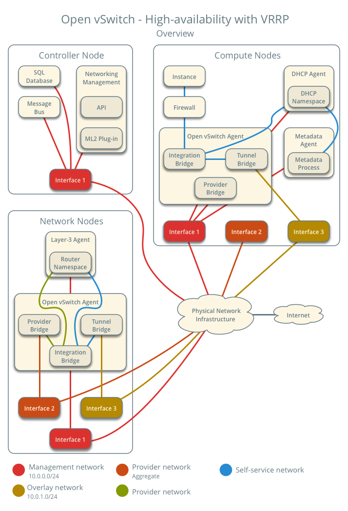
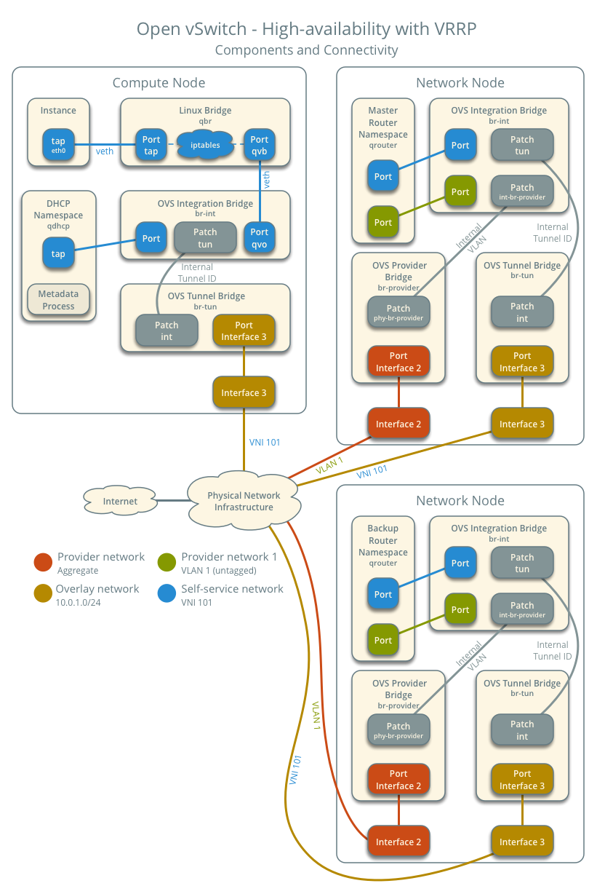

Open vSwitch: High availability using VRRP¶
This architecture example augments the self-service deployment example
with a high-availability mechanism using the Virtual Router Redundancy
Protocol (VRRP) via keepalived and provides failover of routing
for self-service networks. It requires a minimum of two network nodes
because VRRP creates one master (active) instance and at least one backup
instance of each router.
During normal operation, keepalived on the master router periodically
transmits heartbeat packets over a hidden network that connects all VRRP
routers for a particular project. Each project with VRRP routers uses a
separate hidden network. By default this network uses the first value in
the tenant_network_types option in the ml2_conf.ini file. For
additional control, you can specify the self-service network type and physical
network name for the hidden network using the l3_ha_network_type and
l3_ha_network_name options in the neutron.conf file.
If keepalived on the backup router stops receiving heartbeat packets,
it assumes failure of the master router and promotes the backup router to
master router by configuring IP addresses on the interfaces in the
qrouter namespace. In environments with more than one backup router,
keepalived on the backup router with the next highest priority promotes
that backup router to master router.
Note
This high-availability mechanism configures VRRP using the same priority for all routers. Therefore, VRRP promotes the backup router with the highest IP address to the master router.
Warning
There is a known bug with keepalived v1.2.15 and earlier which can
cause packet loss when max_l3_agents_per_router is set to 3 or more.
Therefore, we recommend that you upgrade to keepalived v1.2.16
or greater when using this feature.
Interruption of VRRP heartbeat traffic between network nodes, typically
due to a network interface or physical network infrastructure failure,
triggers a failover. Restarting the layer-3 agent, or failure of it, does
not trigger a failover providing keepalived continues to operate.
Consider the following attributes of this high-availability mechanism to determine practicality in your environment:
Instance network traffic on self-service networks using a particular router only traverses the master instance of that router. Thus, resource limitations of a particular network node can impact all master instances of routers on that network node without triggering failover to another network node. However, you can configure the scheduler to distribute the master instance of each router uniformly across a pool of network nodes to reduce the chance of resource contention on any particular network node.
Only supports self-service networks using a router. Provider networks operate at layer-2 and rely on physical network infrastructure for redundancy.
For instances with a floating IPv4 address, maintains state of network connections during failover as a side effect of 1:1 static NAT. The mechanism does not actually implement connection tracking.
For production deployments, we recommend at least three network nodes with sufficient resources to handle network traffic for the entire environment if one network node fails. Also, the remaining two nodes can continue to provide redundancy.
Prerequisites¶
Add one network node with the following components:
Three network interfaces: management, provider, and overlay.
OpenStack Networking layer-2 agent, layer-3 agent, and any dependencies.
Note
You can keep the DHCP and metadata agents on each compute node or move them to the network nodes.
Architecture¶

The following figure shows components and connectivity for one self-service network and one untagged (flat) network. The primary router resides on network node 1. In this particular case, the instance resides on the same compute node as the DHCP agent for the network. If the DHCP agent resides on another compute node, the latter only contains a DHCP namespace and Linux bridge with a port on the overlay physical network interface.

Example configuration¶
Use the following example configuration as a template to add support for high-availability using VRRP to an existing operational environment that supports self-service networks.
Controller node¶
In the
neutron.conffile:Enable VRRP.
[DEFAULT] l3_ha = True
Restart the following services:
Server
Network node 1¶
No changes.
Network node 2¶
Install the Networking service OVS layer-2 agent and layer-3 agent.
Install OVS.
In the
neutron.conffile, configure common options:[DEFAULT] core_plugin = ml2 auth_strategy = keystone [database] # ... [keystone_authtoken] # ... [nova] # ... [agent] # ...
See the Installation Tutorials and Guides and Configuration Reference for your OpenStack release to obtain the appropriate additional configuration for the
[DEFAULT],[database],[keystone_authtoken],[nova], and[agent]sections.Start the following services:
OVS
Create the OVS provider bridge
br-provider:$ ovs-vsctl add-br br-provider
Add the provider network interface as a port on the OVS provider bridge
br-provider:$ ovs-vsctl add-port br-provider PROVIDER_INTERFACE
Replace
PROVIDER_INTERFACEwith the name of the underlying interface that handles provider networks. For example,eth1.In the
openvswitch_agent.inifile, configure the layer-2 agent.[ovs] bridge_mappings = provider:br-provider local_ip = OVERLAY_INTERFACE_IP_ADDRESS [agent] tunnel_types = vxlan l2_population = true [securitygroup] firewall_driver = iptables_hybrid
Replace
OVERLAY_INTERFACE_IP_ADDRESSwith the IP address of the interface that handles VXLAN overlays for self-service networks.Start the following services:
Open vSwitch agent
Layer-3 agent
Compute nodes¶
No changes.
Verify service operation¶
Source the administrative project credentials.
Verify presence and operation of the agents.
$ openstack network agent list +--------------------------------------+--------------------+----------+-------------------+-------+-------+---------------------------+ | ID | Agent Type | Host | Availability Zone | Alive | State | Binary | +--------------------------------------+--------------------+----------+-------------------+-------+-------+---------------------------+ | 1236bbcb-e0ba-48a9-80fc-81202ca4fa51 | Metadata agent | compute2 | None | True | UP | neutron-metadata-agent | | 457d6898-b373-4bb3-b41f-59345dcfb5c5 | Open vSwitch agent | compute2 | None | True | UP | neutron-openvswitch-agent | | 71f15e84-bc47-4c2a-b9fb-317840b2d753 | DHCP agent | compute2 | nova | True | UP | neutron-dhcp-agent | | 8805b962-de95-4e40-bdc2-7a0add7521e8 | L3 agent | network1 | nova | True | UP | neutron-l3-agent | | a33cac5a-0266-48f6-9cac-4cef4f8b0358 | Open vSwitch agent | network1 | None | True | UP | neutron-openvswitch-agent | | a6c69690-e7f7-4e56-9831-1282753e5007 | Metadata agent | compute1 | None | True | UP | neutron-metadata-agent | | af11f22f-a9f4-404f-9fd8-cd7ad55c0f68 | DHCP agent | compute1 | nova | True | UP | neutron-dhcp-agent | | bcfc977b-ec0e-4ba9-be62-9489b4b0e6f1 | Open vSwitch agent | compute1 | None | True | UP | neutron-openvswitch-agent | | 7f00d759-f2c9-494a-9fbf-fd9118104d03 | Open vSwitch agent | network2 | None | True | UP | neutron-openvswitch-agent | | b28d8818-9e32-4888-930b-29addbdd2ef9 | L3 agent | network2 | nova | True | UP | neutron-l3-agent | +--------------------------------------+--------------------+----------+-------------------+-------+-------+---------------------------+
Create initial networks¶
Similar to the self-service deployment example, this configuration supports multiple VXLAN self-service networks. After enabling high-availability, all additional routers use VRRP. The following procedure creates an additional self-service network and router. The Networking service also supports adding high-availability to existing routers. However, the procedure requires administratively disabling and enabling each router which temporarily interrupts network connectivity for self-service networks with interfaces on that router.
Source a regular (non-administrative) project credentials.
Create a self-service network.
$ openstack network create selfservice2 +-------------------------+--------------+ | Field | Value | +-------------------------+--------------+ | admin_state_up | UP | | mtu | 1450 | | name | selfservice2 | | port_security_enabled | True | | router:external | Internal | | shared | False | | status | ACTIVE | +-------------------------+--------------+
Create a IPv4 subnet on the self-service network.
$ openstack subnet create --subnet-range 198.51.100.0/24 \ --network selfservice2 --dns-nameserver 8.8.4.4 selfservice2-v4 +-------------------+------------------------------+ | Field | Value | +-------------------+------------------------------+ | allocation_pools | 198.51.100.2-198.51.100.254 | | cidr | 198.51.100.0/24 | | dns_nameservers | 8.8.4.4 | | enable_dhcp | True | | gateway_ip | 198.51.100.1 | | ip_version | 4 | | name | selfservice2-v4 | +-------------------+------------------------------+
Create a IPv6 subnet on the self-service network.
$ openstack subnet create --subnet-range fd00:198:51:100::/64 --ip-version 6 \ --ipv6-ra-mode slaac --ipv6-address-mode slaac --network selfservice2 \ --dns-nameserver 2001:4860:4860::8844 selfservice2-v6 +-------------------+--------------------------------------------------------+ | Field | Value | +-------------------+--------------------------------------------------------+ | allocation_pools | fd00:198:51:100::2-fd00:198:51:100:ffff:ffff:ffff:ffff | | cidr | fd00:198:51:100::/64 | | dns_nameservers | 2001:4860:4860::8844 | | enable_dhcp | True | | gateway_ip | fd00:198:51:100::1 | | ip_version | 6 | | ipv6_address_mode | slaac | | ipv6_ra_mode | slaac | | name | selfservice2-v6 | +-------------------+--------------------------------------------------------+
Create a router.
$ openstack router create router2 +-----------------------+---------+ | Field | Value | +-----------------------+---------+ | admin_state_up | UP | | name | router2 | | status | ACTIVE | +-----------------------+---------+
Add the IPv4 and IPv6 subnets as interfaces on the router.
$ openstack router add subnet router2 selfservice2-v4 $ openstack router add subnet router2 selfservice2-v6
Note
These commands provide no output.
Add the provider network as a gateway on the router.
$ openstack router set --external-gateway provider1 router2
Verify network operation¶
Source the administrative project credentials.
Verify creation of the internal high-availability network that handles VRRP heartbeat traffic.
$ openstack network list +--------------------------------------+----------------------------------------------------+--------------------------------------+ | ID | Name | Subnets | +--------------------------------------+----------------------------------------------------+--------------------------------------+ | 1b8519c1-59c4-415c-9da2-a67d53c68455 | HA network tenant f986edf55ae945e2bef3cb4bfd589928 | 6843314a-1e76-4cc9-94f5-c64b7a39364a | +--------------------------------------+----------------------------------------------------+--------------------------------------+
On each network node, verify creation of a
qrouternamespace with the same ID.Network node 1:
# ip netns qrouter-b6206312-878e-497c-8ef7-eb384f8add96
Network node 2:
# ip netns qrouter-b6206312-878e-497c-8ef7-eb384f8add96
Note
The namespace for router 1 from Open vSwitch: Self-service networks should only appear on network node 1 because of creation prior to enabling VRRP.
On each network node, show the IP address of interfaces in the
qrouternamespace. With the exception of the VRRP interface, only one namespace belonging to the master router instance contains IP addresses on the interfaces.Network node 1:
# ip netns exec qrouter-b6206312-878e-497c-8ef7-eb384f8add96 ip addr show 1: lo: <LOOPBACK,UP,LOWER_UP> mtu 65536 qdisc noqueue state UNKNOWN group default qlen 1 link/loopback 00:00:00:00:00:00 brd 00:00:00:00:00:00 inet 127.0.0.1/8 scope host lo valid_lft forever preferred_lft forever inet6 ::1/128 scope host valid_lft forever preferred_lft forever 2: ha-eb820380-40@if21: <BROADCAST,MULTICAST,UP,LOWER_UP> mtu 1450 qdisc noqueue state UP group default qlen 1000 link/ether fa:16:3e:78:ba:99 brd ff:ff:ff:ff:ff:ff link-netnsid 0 inet 169.254.192.1/18 brd 169.254.255.255 scope global ha-eb820380-40 valid_lft forever preferred_lft forever inet 169.254.0.1/24 scope global ha-eb820380-40 valid_lft forever preferred_lft forever inet6 fe80::f816:3eff:fe78:ba99/64 scope link valid_lft forever preferred_lft forever 3: qr-da3504ad-ba@if24: <BROADCAST,MULTICAST,UP,LOWER_UP> mtu 1450 qdisc noqueue state UP group default qlen 1000 link/ether fa:16:3e:dc:8e:a8 brd ff:ff:ff:ff:ff:ff link-netnsid 0 inet 198.51.100.1/24 scope global qr-da3504ad-ba valid_lft forever preferred_lft forever inet6 fe80::f816:3eff:fedc:8ea8/64 scope link valid_lft forever preferred_lft forever 4: qr-442e36eb-fc@if27: <BROADCAST,MULTICAST,UP,LOWER_UP> mtu 1450 qdisc noqueue state UP group default qlen 1000 link/ether fa:16:3e:ee:c8:41 brd ff:ff:ff:ff:ff:ff link-netnsid 0 inet6 fd00:198:51:100::1/64 scope global nodad valid_lft forever preferred_lft forever inet6 fe80::f816:3eff:feee:c841/64 scope link valid_lft forever preferred_lft forever 5: qg-33fedbc5-43@if28: <BROADCAST,MULTICAST,UP,LOWER_UP> mtu 1500 qdisc noqueue state UP group default qlen 1000 link/ether fa:16:3e:03:1a:f6 brd ff:ff:ff:ff:ff:ff link-netnsid 0 inet 203.0.113.21/24 scope global qg-33fedbc5-43 valid_lft forever preferred_lft forever inet6 fd00:203:0:113::21/64 scope global nodad valid_lft forever preferred_lft forever inet6 fe80::f816:3eff:fe03:1af6/64 scope link valid_lft forever preferred_lft forever
Network node 2:
# ip netns exec qrouter-b6206312-878e-497c-8ef7-eb384f8add96 ip addr show 1: lo: <LOOPBACK,UP,LOWER_UP> mtu 65536 qdisc noqueue state UNKNOWN group default qlen 1 link/loopback 00:00:00:00:00:00 brd 00:00:00:00:00:00 inet 127.0.0.1/8 scope host lo valid_lft forever preferred_lft forever inet6 ::1/128 scope host valid_lft forever preferred_lft forever 2: ha-7a7ce184-36@if8: <BROADCAST,MULTICAST,UP,LOWER_UP> mtu 1450 qdisc noqueue state UP group default qlen 1000 link/ether fa:16:3e:16:59:84 brd ff:ff:ff:ff:ff:ff link-netnsid 0 inet 169.254.192.2/18 brd 169.254.255.255 scope global ha-7a7ce184-36 valid_lft forever preferred_lft forever inet6 fe80::f816:3eff:fe16:5984/64 scope link valid_lft forever preferred_lft forever 3: qr-da3504ad-ba@if11: <BROADCAST,MULTICAST,UP,LOWER_UP> mtu 1450 qdisc noqueue state UP group default qlen 1000 link/ether fa:16:3e:dc:8e:a8 brd ff:ff:ff:ff:ff:ff link-netnsid 0 4: qr-442e36eb-fc@if14: <BROADCAST,MULTICAST,UP,LOWER_UP> mtu 1450 qdisc noqueue state UP group default qlen 1000 5: qg-33fedbc5-43@if15: <BROADCAST,MULTICAST,UP,LOWER_UP> mtu 1500 qdisc noqueue state UP group default qlen 1000 link/ether fa:16:3e:03:1a:f6 brd ff:ff:ff:ff:ff:ff link-netnsid 0
Note
The master router may reside on network node 2.
Launch an instance with an interface on the additional self-service network. For example, a CirrOS image using flavor ID 1.
$ openstack server create --flavor 1 --image cirros --nic net-id=NETWORK_ID selfservice-instance2
Replace
NETWORK_IDwith the ID of the additional self-service network.Determine the IPv4 and IPv6 addresses of the instance.
$ openstack server list +--------------------------------------+-----------------------+--------+----------------------------------------------------------------+--------+---------+ | ID | Name | Status | Networks | Image | Flavor | +--------------------------------------+-----------------------+--------+----------------------------------------------------------------+--------+---------+ | bde64b00-77ae-41b9-b19a-cd8e378d9f8b | selfservice-instance2 | ACTIVE | selfservice2=fd00:198:51:100:f816:3eff:fe71:e93e, 198.51.100.4 | cirros | m1.tiny | +--------------------------------------+-----------------------+--------+----------------------------------------------------------------+--------+---------+
Create a floating IPv4 address on the provider network.
$ openstack floating ip create provider1 +-------------+--------------------------------------+ | Field | Value | +-------------+--------------------------------------+ | fixed_ip | None | | id | 0174056a-fa56-4403-b1ea-b5151a31191f | | instance_id | None | | ip | 203.0.113.17 | | pool | provider1 | +-------------+--------------------------------------+
Associate the floating IPv4 address with the instance.
$ openstack server add floating ip selfservice-instance2 203.0.113.17
Note
This command provides no output.
Verify failover operation¶
Begin a continuous
pingof both the floating IPv4 address and IPv6 address of the instance. While performing the next three steps, you should see a minimal, if any, interruption of connectivity to the instance.On the network node with the master router, administratively disable the overlay network interface.
On the other network node, verify promotion of the backup router to master router by noting addition of IP addresses to the interfaces in the
qrouternamespace.On the original network node in step 2, administratively enable the overlay network interface. Note that the master router remains on the network node in step 3.
Keepalived VRRP health check¶
The health of your keepalived instances can be automatically monitored via
a bash script that verifies connectivity to all available and configured
gateway addresses. In the event that connectivity is lost, the master router
is rescheduled to another node.
If all routers lose connectivity simultaneously, the process of selecting a new master router will be repeated in a round-robin fashion until one or more routers have their connectivity restored.
To enable this feature, edit the l3_agent.ini file:
ha_vrrp_health_check_interval = 30
Where ha_vrrp_health_check_interval indicates how often in seconds the
health check should run. The default value is 0, which indicates that the
check should not run at all.
Network traffic flow¶
This high-availability mechanism simply augments Open vSwitch: Self-service networks with failover of layer-3 services to another router if the primary router fails. Thus, you can reference Self-service network traffic flow for normal operation.